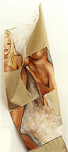

|  |  |  |  |  |
|
 click here to view larger image |
 |
Nice Piece oil paint, cotton canvas, 1 x 2 meters 2001 Eye-catching? Sensationalism? Written on the back of the canvas is the transcript of a two-hour salon discussion on 'sexuality in art.' The organic discussion touched on many angles of the topic, for instance: Someone said that art school graduation exhibits often have a lot of sexual content because art school graduates are at the age where their hormones are raging. Another person talked about the Guerilla Girls who are known for saying, "Do women have to be naked to get into the Metropolitan Museum of Art? Less than five percent of artists in the Modern Arts section are women, but 85 percent of the nudes are female." |
|
This oil painting is on a pre-gessoed canvas.
It looks a bit 3D or has 'folds' because it is hanging on the wall by fishing line. The painting is cut up and arranged so that the viewer can see parts of the discussion and parts of the picture at the same time. The intention was that 'snippets' of the conversation would coincide nicely with the 'pieces' of the image, but it was a random process with random results. |